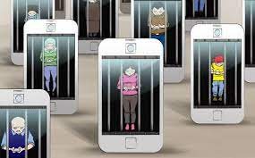

Como podemos ajudar as pessoas de maior idade a se cadastrar com mais facilidade em aplicativos
Integrantes: Gabreil B,Tomás e Luciano
Principal

Análise
análise do grupo sobre a facilidade de pessoas idosas no cadastro de aplicativos:
O nosso grupo acha que o tema cadastro com mais facilidade para pessoas idosas e muitos importante para os idosos conseguirem se adaptar melhor com a tecnologia de hoje em dia pois praticamente tudo e feito com ajuda da tecnologia.
Como podemos fazer e facilitar os registros faciais ser adaptados para garantir que o acesso seja inclusivo e equitativo para todos os cidadãos?
OBJETIVOS
Objetivo Geral
Conseguir uma forma para facilitar o registro facial para pessoas idosas que tem algumas dificuldades em se registrar para conseguir criar uma conta em aplicativos de bancos,etc.
Objetivo Especifico
Aumentar a taxa de acessibilidade dos idosos, pessoas com dificuldades em 20% até o final do próximo ano de 2024.
Reduzir o tempo médio para uma pessoa com dificuldade conseguir efetuar o registro, caso encontre erros e bloqueios.
Realizar uma pesquisa de formulário para encontrar o problema, e encontrar a resolução perfeita para não fazer um projeto inútil.
Integrar protótipos / tecnologias : O problema está situado na falta de informação para quando as pessoas fazem algo de errado, ou não seguem o caminho de registro de forma certa, então fazer uma tecnologia que tenha o passo a passo com "erros comuns" a serem encontrados, seria uma alternativa para facilitar para essas pessoas.
Oferecer Opções de Personalização: Desenvolver opções diferentes para cada tipo de problema, para que seja mais especifico possível na ajuda, desde sites que possam ter ajuda, a aplicativos mais avançados com cada registro facial integrado.
Criar tutoriais simples: Desenvolver tutoriais e guias de uso acessíveis, que possam ser acessados por qualquer um, a todo momento, e que seja o mais simples e intuitivo possível, sendo a quase impossível a pessoa olhar o tutorial e não se sentir atendida para o seu problema.
METODOLOGIA
Definição do Escopo do Projeto: O nosso projeto deve como total objetivo de alcançar pessoas de todas as idades (mas principalmente de mais idade, mais velhas) que possam ter problemas técnicos quando vão fazer registro e login em plataformas que usam a inteligência de escaneamento de rosto.
Análise de Viabilidade: O projeto pode abranger e ser útil para o mundo inteiro, visando que qualquer um pode ter diversos problemas e dificuldades na área de registro, por ser um momento em que é muito “complicado” se entender o que está se pedindo para fazer o escaneamento.
Planejamento do Projeto: As tarefas mais importantes do projeto são a forma de fazer para “facilitar” para as pessoas o cadastro, sendo mais específico e tendo até um chat de suporte, com diversas perguntas respondidas, e outra parte é fazer um site que possa explicar ainda mais todos os passos que devem a ser seguido, como se fosse um padrão para a pessoa dificilmente errar, o site pode incluir fotos e vídeos que possam demonstrar um “ passo a passo”.
SOLUÇÃO
Criar um aplicativo que ajude as pessoas com dificuldade a fazer os registros ou um site com um tutorial ensinando as pessoas com dificuldade a fazer os registros.
Resultados
Os resultados do nosso projeto não foram muitos expressivo, sendo assim a maioria das respostas foram negativas, com pessoas usando argumentos que ou não conheciam a ideia do nosso projeto, ou que não achavam relevante, o nosso público não é muito grande e sim focado para pessoas com mais idades, mas as pessoas que eram mais nova " jovens " disseram que não se interessavam, enquanto pessoas mais velhas mostraram mais interesse no nosso projeto, visando que poderia funcionar para elas, ou até mesmo já tinham passado por um problema igual ou parecido, então enquanto grupo acreditamos que o nosso projeto é uma ideia boa para pessoas de mais idade, mas pessoas que são mais "digitalizadas " não enxergam esse problema.
CONCLUSÃO
Incentive os jovens a adotarem práticas saudáveis no uso das redes sociais, como definir limites de tempo, estabelecer horários para desconectar e promover atividades offline, como exercícios físicos, hobbies e interações sociais presenciais, eduque os jovens sobre os possíveis impactos negativos do uso excessivo das redes sociais e os benefícios de um equilíbrio saudável entre o tempo online e offline.